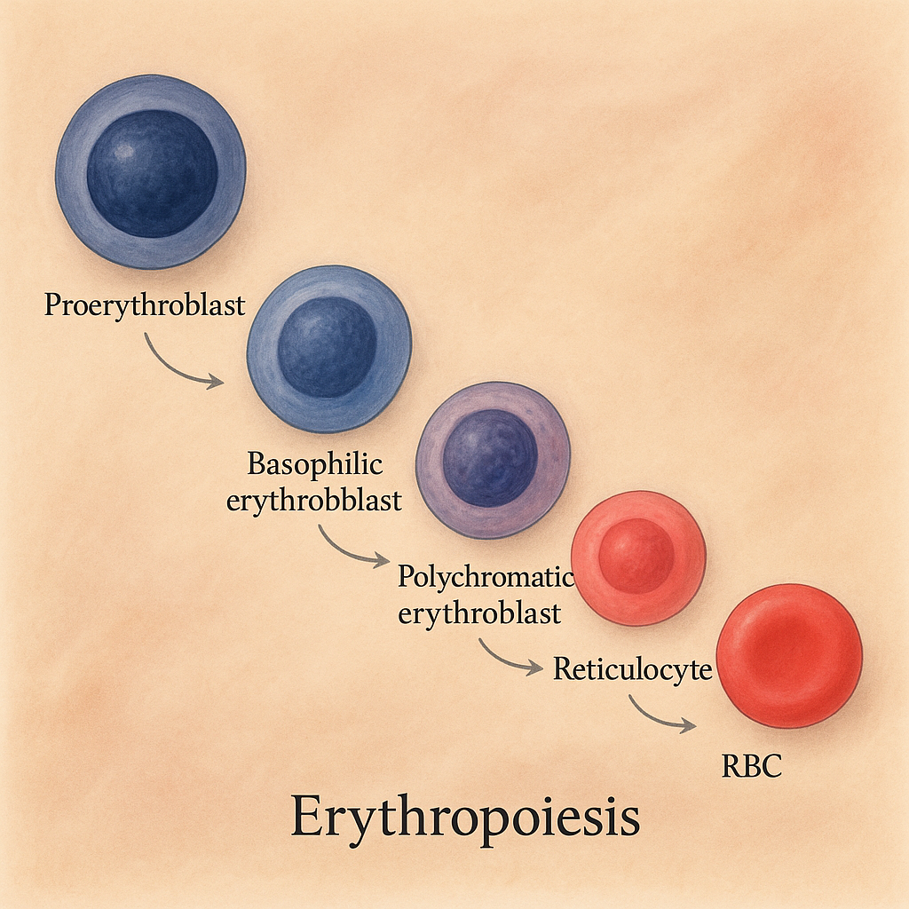

lovely Hematology
گلبولهای قرمز در لام مغز استخوان قابل مشاهده هستند. انواع مختلف سلولهای پیشساز گلبول قرمز و گلبولهای قرمز بالغ در شرایط خاص قابل مشاهده هستند.
در مغز استخوان طی فرآیند طبیعی اریتروپوئز، گلبولهای قرمز هستهدار دیده میشوند. این سلولها شامل مراحل اولیه تکامل گلبولهای قرمز هستند که قبل از اینکه هسته خود را از دست بدهند و به گلبول قرمز بالغ تبدیل شوند، در لام مغز استخوان حضور دارند.
حضور این سلولها در شرایط آسیب یا استرس مغز استخوان افزایش مییابد.
تکامل گلبول قرمز مسیر پیچیدهای را در مغز استخوان طی میکند. مراحل تکاملی شامل:
گلبولهای قرمز بالغ معمولاً در خون محیطی دیده میشوند. در مغز استخوان، این سلولها ممکن است در نتیجه نشت سلولها به محیط اطراف یا در شرایطی که سد مغز استخوان به خون محیطی آسیب دیده باشد، مشاهده شوند.
این وضعیت غیرعادی ممکن است در بیماریهایی مثل لوسمی یا آسیب شدید مغز استخوان رخ دهد.
افزایش سطح آنزیم لاکتات دهیدروژناز (LDH) در آزمایش خون معمولاً به آسیب سلولی یا مرگ سلولی مربوط است. LDH در تمامی سلولهای بدن یافت میشود و تخریب سلولها موجب آزاد شدن این آنزیم به جریان خون میشود.
شرایط مختلف کبدی که میتوانند باعث افزایش LDH شوند:
در حمله قلبی، مرگ سلولهای عضله قلب باعث آزاد شدن LDH به خون میشود. LDH به عنوان یکی از مارکرهای بیوشیمیایی برای تشخیص آسیب به بافت قلب استفاده میشود.
LDH به ویژه در فازهای بعدی پس از حمله قلبی (پس از آستانه مارکرهای اصلی مانند CK-MB) افزایش مییابد.
آسیب به عضلات اسکلتی یا شرایطی مانند رابدومیولیز که منجر به تخریب بافت عضله میشود، میتواند سطح LDH را افزایش دهد.
تمرینات شدید یا جراحتهای بزرگ از علل افزایش LDH هستند.
عفونتهای ویروسی یا باکتریایی که باعث التهاب بافتی میشوند، میتوانند سطح LDH را بالا ببرند. مثالهایی شامل پنومونی عفونی شدید یا انواع خاصی از مننژیت هستند.
LDH میتواند به عنوان یک مارکر غیراختصاصی در انواع سرطان، از جمله سرطان خون (لوکمی)، لنفوم، یا سرطانهای متاستاتیک (مانند سرطان سینه و ریه) افزایش یابد.
سایر شرایطی که میتوانند LDH را افزایش دهند:
خلاصه: افزایش LDH یک شاخص غیر اختصاصی برای مرگ سلولی است و با بیماریها یا آسیبهای متعددی همراه است، از جمله بیماریهای کبدی، حمله قلبی، عفونتها، تروما، سرطانها، بیماریهای خونی و آسیبهای عضلانی یا استخوانی.
RDW از نوع SD (Red cell Distribution Width – Standard Deviation) و CV (Red cell Distribution Width – Coefficient of Variation) همواره با یکدیگر تغییر نمیکنند و در برخی از شرایط، یکی از آنها ممکن است تغییرات بیشتری نشان دهد یا حساسیت بالاتری در تحلیلهای بالینی داشته باشد.
در مطالعات مشخص شده که RDW-SD و RDW-CV در گروه بیماران مبتلا به کمخونی ناشی از فقر آهن به طور متفاوت با سطح فریتین همبستگی دارند. RDW-SD ارتباط قویتری با کمبود آهن نشان داده است.
در بیماران مبتلا به فیبروز کبدی:
به همین دلیل، RDW-SD در برخی شرایط میتواند تغییر در تنوع اندازه گلبولهای قرمز را دقیقتر نشان دهد.
در تحلیلهای بالینی، انتخاب شاخص مناسب برای وضعیت خاص میتواند به تصمیمگیریهای دقیقتر کمک کند:
همولیز فرآیندی است که طی آن تخریب گلبولهای قرمز (RBCs) رخ میدهد و باعث آزاد شدن هموگلوبین به جریان خون میشود. هموگلوبین پروتئینی حیاتی است که نقش حمل اکسیژن از ریهها به بافتهای بدن را ایفا میکند.
در شرایط همولیز، گلبولهای قرمز نابالغ یا بالغ به دلیل آسیب به غشای سلولی یا اختلالات داخلی دچار تخریب میشوند.
اگر سرعت همولیز بالا باشد، میزان هموگلوبین آزاد در خون میتواند از توانایی بدن برای پردازش آن فراتر رود و منجر به هموگلوبینمی (وجود هموگلوبین آزاد در پلاسمای خون) شود.
عوامل داخلی که میتوانند باعث همولیز شوند:
عوامل خارجی که میتوانند باعث همولیز شوند:
تروماهای شیمیایی مثل مواجهه با مواد اکسیدکننده نیز میتوانند منجر به همولیز شوند.
تشخیص همولیز مستلزم بررسی سطح LDH، هپتوگلوبین (کاهش یافته در همولیز) و بیلیروبین در آزمایش خون است. اسمیر خون محیطی نیز روش مفیدی برای مشاهده تغییرات شکل RBC است.
mRNA گلوبینها نقش حیاتی در سنتز پروتئینهای گلوبین دارند که برای تشکیل هموگلوبین و عملکرد صحیح اریتروسیتها ضروری است. طول عمر یا پایداری mRNA گلوبینها در مراحل مختلف تمایز سلولهای اریتروئید متغیر است.
در این مرحله، سطح بالایی از mRNA گلوبین تولید میشود که ناشی از پایداری بالا و کاهش سرعت تخریب این مولکولها است.
پایداری بالای این مولکولهای mRNA به سلولها اجازه میدهد که به طور مستمر پروتئینهای گلوبین را سنتز کنند، که برای تولید هموگلوبین مورد نیاز در گلبولهای قرمز ضروری است.
در هنگام انتقال از مرحله ارثوکروماتیک اریتروبلاستها به رتیکولوسیتها، تغییرات قابلتوجهی در پایداری mRNA گلوبین رخ میدهد:
تعدادی از عوامل و پروتئینهای تنظیمی طول عمر mRNA گلوبین را تنظیم میکنند:
درک مکانیسمهای تنظیم پایداری mRNA گلوبین میتواند به اهداف زیر کمک کند:
تغییر وضعیت بدن از حالت خوابیده به ایستاده میتواند تأثیرات قابل توجهی بر پارامترهای خونی داشته باشد.
هنگامی که از حالت خوابیده به حالت ایستاده تغییر میدهید، نیروی جاذبه باعث تجمع خون در اندامهای تحتانی میشود. این تجمع (پولینگ) خون به کاهش نسبی حجم پلاسمای خون منجر میشود.
تعداد گلبولهای قرمز در خون تغییری نمیکند، اما غلظت هموگلوبین، هماتوکریت و تعداد گلبولهای قرمز افزایش مییابد.
کاهش انتقال اکسیژن یا فشار خون در گردش مرکزی ممکن است به ترشح کوتاهمدت هورمون اریتروپوئیتین منجر شود. این هورمون تولید گلبولهای قرمز را تحریک میکند و در پاسخ به کاهش حجم پلاسمای خون، غلظت کلی آن افزایش مییابد.
این تغییرات اغلب گذرا هستند و با ماندگاری طولانی در حالت ایستاده، بدن تطبیق یافته و مقادیر هماتوکریت، هموگلوبین و تعداد گلبولهای قرمز به حالت عادی بازمیگردد.
این پدیده معمولاً مشکلی پزشکی ایجاد نمیکند و بخشی از پاسخهای فیزیولوژیکی طبیعی بدن است.